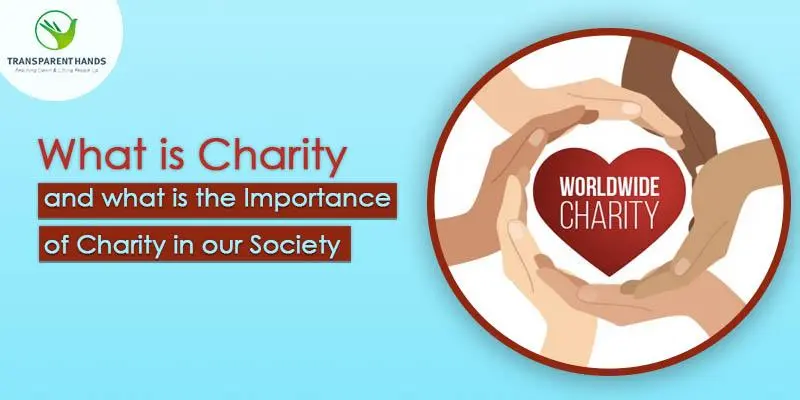

Up Charity
What is Charity
The true meaning of charity is generosity and helpfulness especially toward the needy or suffering. Also aid
given to those in need. received charity from the neighbors or an institution engaged in relief of the
poor.Although charity can also mean an organization set up to provide help and raise money for those in need
and the voluntary giving of help, typically in the form of money, to those in need, as stated in the
dictionary

Why is charity important

Society and governments aren't set up to protect everyone who needs it. That's why charities are here to fill
the gaps and provide dedicated resources to help the most vulnerable. For children, they rely on their parents
or carers to give them safety, guidance, and access to life's necessities.Charity is essential and therefore
meant to be done for public benefit, relief and to provide assistance to people at times of need in any part of
the world, especially those who are the victims of war, natural disaster, catastrophe, hunger, disease, poverty,
orphans by supplying them with food, shelter, medical aid
How can I help
There are thousands of charities around the world and many ways you support the ones of your choice.For example
by donating necessities or giving money straight to the charity.You can also spread the message or share this
website to educate others about charity.Charities also accept used items, so if there is anything you dont want
in your house why not give it for a good cause.
Why don't you do a good deed and help a charity today
No donation is too big or too small!!!
Here are some links that take you to charity websites